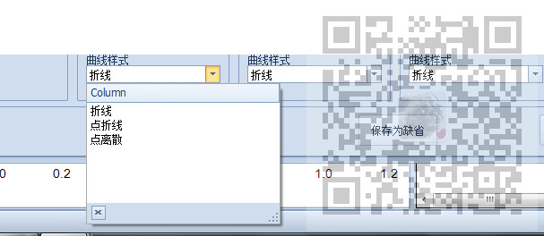
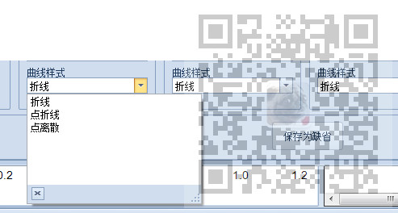

原文出处:本文由博客园博主霸道流氓提供。
原文连接:https://www.cnblogs.com/badaoliumangqizhi/p/12059599.html
原文连接:https://www.cnblogs.com/badaoliumangqizhi/p/12059599.html
场景
DevExpress的下拉框控件LookUpEdit的使用、添加item选项值、修改默认显示值：
https://blog.csdn.net/BADAO_LIUMANG_QIZHI/article/details/102464577
参照上面实现的LookUpEdit实现的效果为

除了要显示的选项外，还有一个列名Column显示。
注：
博客主页：
https://blog.csdn.net/badao_liumang_qizhi
关注公众号
霸道的程序猿
获取编程相关电子书、教程推送与免费下载
实现
怎样设置不让此列名显示
LookUpEdit typeSelect = new LookUpEdit();
typeSelect.Properties.ShowHeader = false;完整示例代码
LookUpEdit typeSelect = new LookUpEdit();
typeSelect.Properties.ShowHeader = false;
typeSelect.Width = Global.CHART_OPTION_WIDTH;
typeSelect.Name = "typeSelectY" + yList[i].No;
typeSelect.Location = new Point(100, 100);
List<string> list = new List<string>();
list.Add("折线");
list.Add("点折线");
list.Add("点离散");
typeSelect.Properties.DataSource = list;
typeSelect.Properties.NullText = yList[i].Type;
去掉列名后
